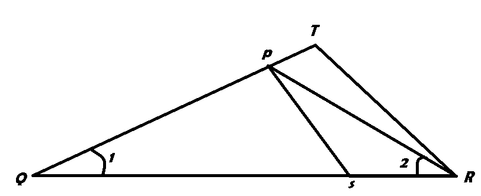
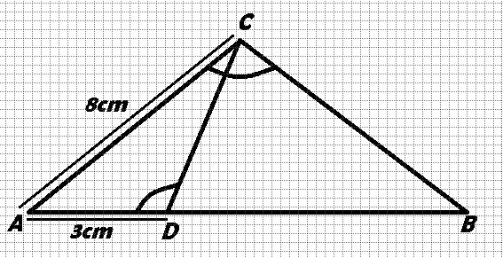
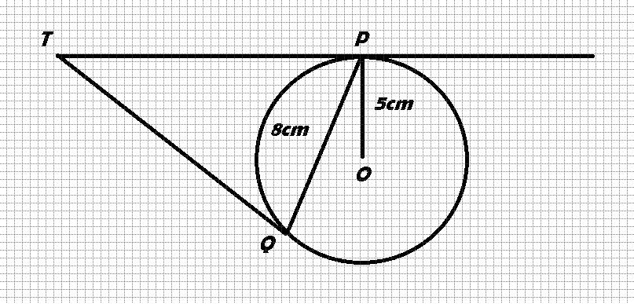
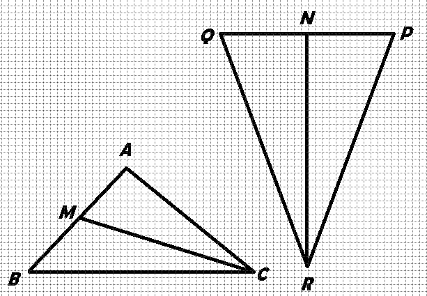
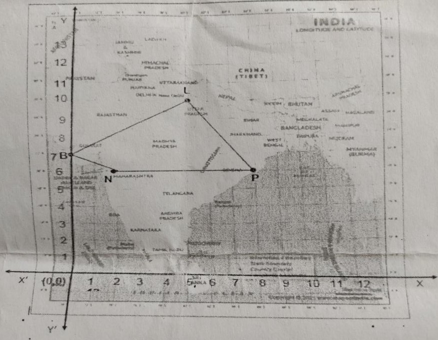
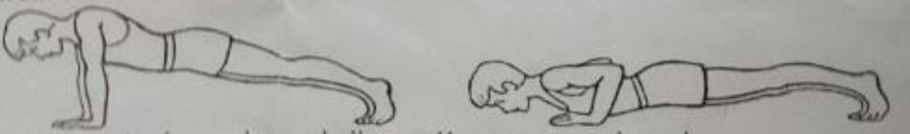
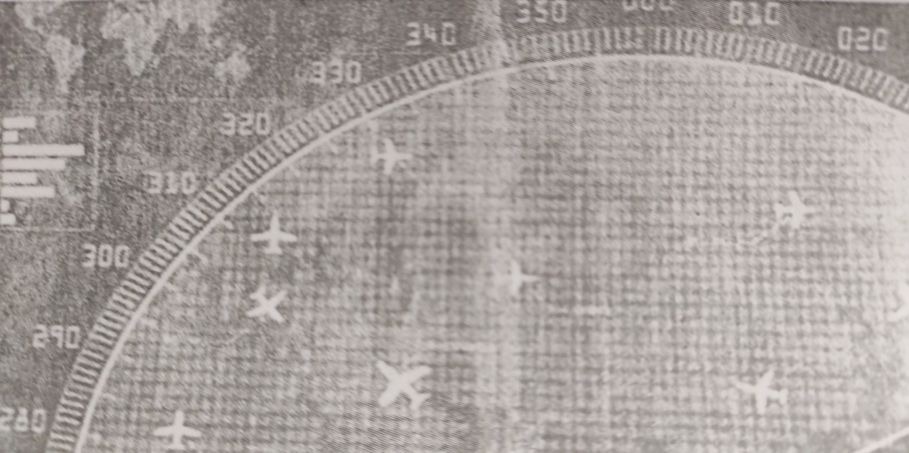

The largest number that divides 70 and 125, which leaves the remainders 5 and 8 is-
65
15
13
25
If 1/2 is a root of the quadratic equation x2- mx - 5 / 4 = 0 then value of m is-
2
-3
3
-2
The zeroes of x2 /2x * 8 are -
(2,-4)
(4,-2)
(-2,-2)
(4,-4)
The value of c for which the pair of equations cx - y = 2 and 6x - 2y = 3 will have infinity many
solutions is-
3
-3
-12
No value
If the distance between the points (2,-2) and (-1,x) is 5, one of the value of x is-
2
-2
1
-1
If in triangles ABD and DEF, AB/DE = DC/FD, then they will be similar, if-
∠B = ∠E
∠A = ∠D
∠B = ∠D
∠A = ∠F
The Value of tan60O/tan30O is equal to-
0
1
2
3
If sin A = 1/2, then the value of cot A is-
√3
1/√3
√3/2
1
The diameter of a wheel is 1.26 m. The distance travelled in 500 revolutions is-
2670m
2880m
1980m
1596m
If the angle between two radii of a circle is 110 then the angle between the tangetns at the engs of
teh radii is-
90deg
70deg
50deg
40deg
Directions for questions 19 & 20:
In question numbers 19 and 20, a statement of Assertion (A) is followed by a statement of Reason (R).
Choose the correct option.
Assertion (A): HCF of 510 and 92 is 2, then LCM of 510 & 92 = 32460
(R): HCF(a, b) × LCM(a, b) = a × b
Both Assertion (A) and Reason (R) are true and Reason (R) is the correct explanation of
Assertion (A)
Both Assertion (A) and Reason (R) are true but Reason (R) is not the correct explanation of
Assertion (A)
Assertion (A) is true but Reason (R) is false
Assertion (A) is false but Reason (R) is true
Assertion (A): The ratio in which the line segment joining (2, –3) and (6, 5) is internally divided
by x axis is 1:2
Reason (R): m₁ : m₂ = y₂ – y : y – y₁ is formula for internal division
(A) Both Assertion (A) and Reason (R) are true and Reason (R) is the correct explanation of
Assertion (A)
Both Assertion (A) and Reason (R) are true but Reason (R) is not the correct explanation of
Assertion (A)
Assertion (A) is true but Reason (R) is false
Assertion (A) is false but Reason (R) is true
Solve the following equation:
3x² – 5x – 2 = 0
2x² – 3x + 6 = 0
In the given fig. QR/QS = QT/PR, ∠1 = ∠2 and ∠3 = ∠4, then show that ∆PQS ≅ ∆TQR

OR
In the given figure, ∠ACB = ∠CDA, AC = 8cm, AD = 3cm, then find the value of BD.

The distance between two tangents parallel to each other of a circle is 23 cm. Find the radius of
the circle.
Evaluate:
4(sin²30° + cos²60°) – 3(cos²45° – sin²90°) = ?
Find the perimeter of a quadrant of a circle of radius 14 cm.
OR
Find the length of a chord of a circle whose radius is 10 cm, subtends a right angle at its centre.
Prove that √7 is an irrational number.
If one zero of the quadratic polynomial 4x² + (2k + 1)x – 9 is negative of the other, find the value
of k. Also find the roots of the polynomial.
For what values of k will the following pair of linear equations have infinitely many solutions?
kx + 3y = (k – 3) 12x + ky = 0
OR
A shopkeeper gives books on rent for reading. She takes a fixed charge for the first two days and
an additional charge for each day thereafter. Latika paid Rs 22 for a book kept for six days, while
Anand paid Rs 16 for the book kept for four days. Find the fixed charges and the charge for each
extra day.
If a number x is chosen at random from the numbers –3, –2, –1, 0, 1, 2, 3. What is the probability
that x² ≤ 4?
If 3x = cosec A and x = (3 / x) cot A, find the value of 3(x² – 1 / x²)
OR
Solve the following:
(cos A – sin A + 1) / (cos A + sin A – 1) = cosec A + cot A
In the figure, PQ is a chord of length 6 cm of a circle of radius 5 cm. The tangents at P and Q
intersect at a point T. Find the length TP.

The difference of the squares of two numbers is 180. The square of the smaller number is 8 times the
greater number. Find the two numbers.
OR
A motor boat whose speed is 18 km/h in still water takes 1 hour more to go 24 km upstream than
downstream. Find the speed of the stream.
Given figure: CM and RN are medians of triangles △ABC and △PQR respectively.Given △𝐴𝐵𝐶∼△𝑃𝑄𝑅

A tent is in the shape of a cylinder surmounted by a conical top. If the height and diameter of the
cylindrical part are 2.1 m and 4 m respectively, and the slant height of the top is 2.8 m, find the
area of canvas used for making tent. Also find the cost of the canvas of the tent at the rate of
₹1000 per m². (Note that the base of the tent will be covered with canvas)
OR
Solid consisting of a right circular cone of height 120 cm and radius 60 cm standing on a
hemisphere of radius 60 cm is placed upright in a right circular cylinder full of water such that it
touches the bottom. Find the volume of water left in the cylinder, if the radius of the cylinder is
60 cm and its height is 180 cm.
If the median of the distribution given below is 28.5, find the values of x and y.
Class-interval
Frequency
0 - 10
5
10 - 20
x
20 - 30
20
30 - 40
15
40 - 50
y
50 - 60
5
Total
60
In a GPS, the lines that run east-west are known as lines of latitude, and the lines running
north-south are known as lines of longitude. The latitude and the longitude of a place are its
coordinates and the distance formula is used to find the distance between two places. The distance
between two parallel lines is approximately 150 km. A family from Uttar Pradesh planned a round trip
from Lucknow (L) to Puri (P) via Bhuj (B) and Nashik (N) as shown in the given figure.

Use the above figure to answer the questions that follow:
(i) Find the distance between Lucknow (L) to Bhuj (B).
(ii) If Kota (K), internally divide the line segment joining Lucknow (L) to Bhuj (B) into 3:2,
then find the coordinate of Kota (K).
(iii) Name the type of triangle formed by the places Lucknow (L), Nashik (N) and Puri (P).
OR
Find a place (point) on the longitude (y-axis) which is equidistant from the points Lucknow (L)
and Puri (P).
Push-ups are a fast and effective exercise for building strength. These are helpful in almost all
sports including athletics. While the push-up primarily targets the muscles of the chest, arms, and
shoulders, support required from other muscles helps in toning up the whole

Nitesh wants to participate in the push-up challenge. He can currently make 3000 push-ups in
one hour. But he wants to achieve a target of 3900 push-ups in 1 hour for which he practices
regularly. With each day of practice, he is able to make 5 more push-ups in one hour as compared
to the previous day. If on first day of practice he makes 3000 push-ups and continues to
practice regularly till his target is achieved. Keeping the above situation in mind answer the
following questions.
(i) Form an A.P. representing the number of push-ups per day
(ii) Find the number of push-ups on 10th day before starting
(iii) Find the minimum number of days he needs to practice before the day his goal is
accomplished?
OR
Find the total number of push-ups performed by Nitesh up to the day his goal is achieved.
We all have seen the airplanes flying in the sky but might have not thought of how they actually
reach the correct destination. Air Traffic Control (ATC) is a service provided by ground-based air
traffic controllers who direct aircraft on the ground and through a given section of controlled
airspace, and can provide advisory services to aircraft in non-controlled airspace. Actually, all
this air traffic is managed and regulated by using various concepts based on coordinate geometry and
trigonometry.

At a given instance, ATC finds that the angle of elevation of an airplane from a point on the
ground is 60°. After a flight of 30 seconds, it is observed that the angle of elevation changes
to 30°. The height of the plane remains constantly as 3000√3m. Use the above information to
answer the questions that follow:
(i) Draw a neat labelled figure to show the above situation diagrammatically.
(ii) What is the distance travelled by the plane in 30 seconds?
OR
Keeping the height constant, during the above flight, it was observed that after 15(√3 -1) seconds,
the angle of elevation changed to 45°. How much is the distance travelled in that duration
What is the speed of the plane?